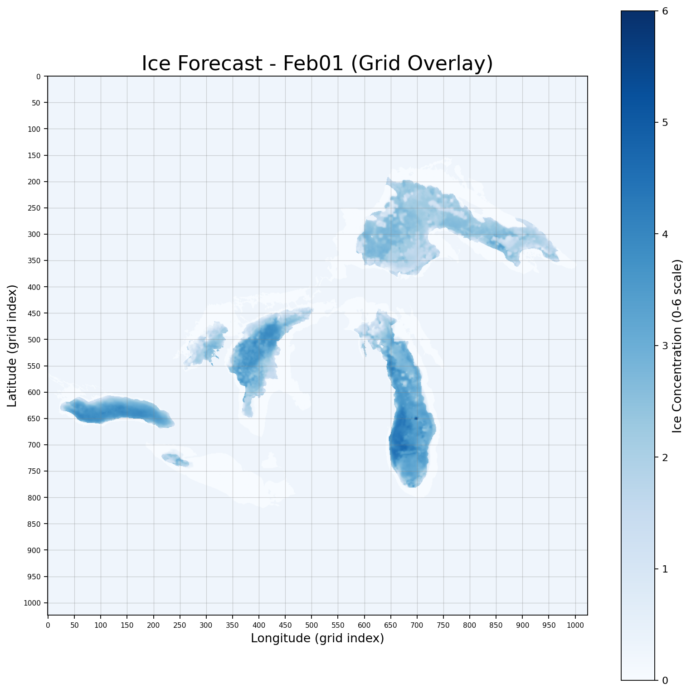
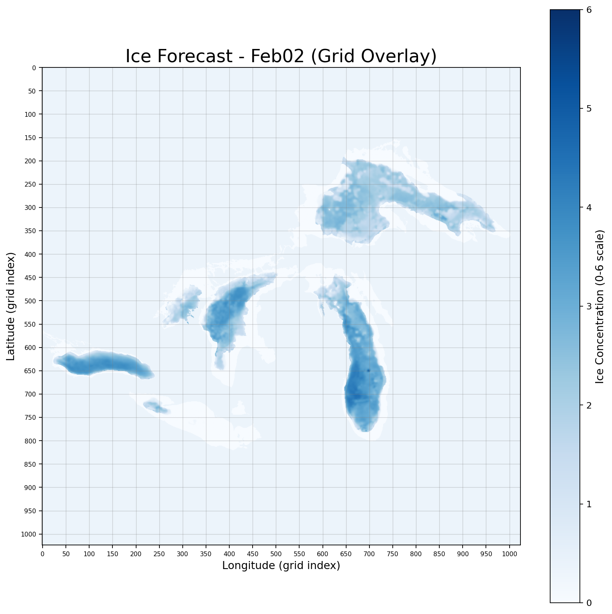
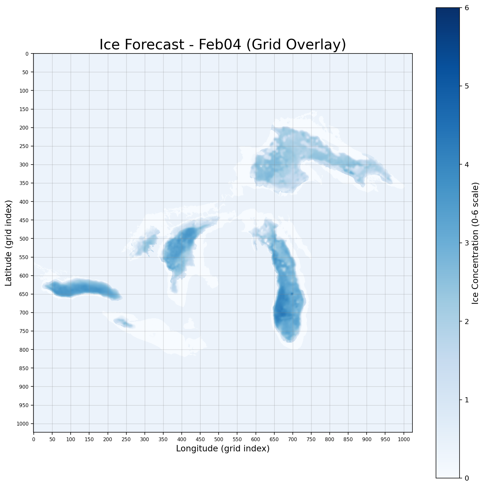

Exploring and analyzing weather patterns using NetCDF files and machine learning
About Forecast Data
The output PNGs and GIF show the model's predicted ice concentration maps for each forecasted day.
Each image is a full 1024x1024 grid pulled directly from the structure of the original NetCDF files, which means that every pixel corresponds to the same spatial location on the Great Lakes as in the real dataset.
The x-axis represents longitude and the y-axis represents latitude.
Each pixel's color reflects the predicted ice concentration value from the model.
We use a fixed color scale from 0 to 6 so the meaning stays consistent across all days.
In the original January data, values near 0 represent open water and higher values represent thicker or more complete ice cover.
On this scale, darker blues correspond to higher ice values and lighter or washed-out blues represent lower values.
The color bar on the right side of each image stays constant so you can compare predictions across time.
Additionally, the PNGs represent single-day predictions, one for each day the model generates.
The GIF combines all PNGs into a time-lapse showing how the model expects ice to grow or shift across the lakes.
Because the spatial grid is preserved, you can track ice changes across the region.
Forecast

Ice forecast that shows the spatial field of ice on February 1st.
Ice Conditions: Rapid ice formation along shorelines
Ice Thickness: Mild
Ice Movement: Drift ice mobile with west and northwest winds
USCG Operational Priority Areas: Track maintenance required in western Lake Erie, the Straits of Mackinac, and the Duluth-Superior approach as refreeze and brash buildup restrict movement. Escorts likely needed for bulk carriers transiting Toledo → Detroit River, Green Bay → Sturgeon Bay, and Apostle Islands → Whitefish Bay routes.
Shipping Guidance: Primary commercial lanes remain navigable but increasingly reliant on USCG-maintained tracks, especially in western Lake Erie, Saginaw Bay, and Green Bay. Offshore routing is preferred across Michigan-Huron corridors when drift ice encroaches on nearshore paths.
Extra: Western Lake Erie maintaining 7–9/10 coverage with new ridge development

Ice forecast that shows the spatial field of ice on February 2nd.
Ice Conditions: Rapid ice formation along shorelines
Ice Thickness: Increasing
Ice Movement: Drift ice mobile with west and northwest winds
USCG Operational Priority Areas: Track maintenance required in western Lake Erie, the Straits of Mackinac, and the Duluth-Superior approach as refreeze and brash buildup restrict movement. Escorts likely needed for bulk carriers transiting Toledo → Detroit River, Green Bay → Sturgeon Bay, and Apostle Islands → Whitefish Bay routes.
Shipping Guidance: Primary commercial lanes remain navigable but increasingly reliant on USCG-maintained tracks, especially in western Lake Erie, Saginaw Bay, and Green Bay. Offshore routing is preferred across Michigan-Huron corridors when drift ice encroaches on nearshore paths.
Extra: Lake Ontario temperatures cooling
Ice forecast that shows the spatial field of ice on February 3rd.
Ice Conditions: Rapid ice formation along shorelines
Ice Thickness: Increasing
Ice Movement: Drift ice mobile with west and northwest winds
USCG Operational Priority Areas: Track maintenance required in western Lake Erie, the Straits of Mackinac, and the Duluth-Superior approach as refreeze and brash buildup restrict movement. Escorts likely needed for bulk carriers transiting Toledo → Detroit River, Green Bay → Sturgeon Bay, and Apostle Islands → Whitefish Bay routes.
Shipping Guidance: Primary commercial lanes remain navigable but increasingly reliant on USCG-maintained tracks, especially in western Lake Erie, Saginaw Bay, and Green Bay. Offshore routing is preferred across Michigan-Huron corridors when drift ice encroaches on nearshore paths.
Extra: Western Lake Erie still maintaining 7–9/10 coverage

Ice forecast that shows the spatial field of ice on February 4th.
Ice Conditions: Rapid ice formation along shorelines
Ice Thickness: Increasing
Ice Movement: Drift ice mobile with west and northwest winds
USCG Operational Priority Areas: Track maintenance required in western Lake Erie, the Straits of Mackinac, and the Duluth-Superior approach as refreeze and brash buildup restrict movement. Escorts likely needed for bulk carriers transiting Toledo → Detroit River, Green Bay → Sturgeon Bay, and Apostle Islands → Whitefish Bay routes.
Shipping Guidance: Primary commercial lanes remain navigable but increasingly reliant on USCG-maintained tracks, especially in western Lake Erie, Saginaw Bay, and Green Bay. Offshore routing is preferred across Michigan-Huron corridors when drift ice encroaches on nearshore paths.
Extra: Lake Huron ice coverage noticably increasing, with new ridge development